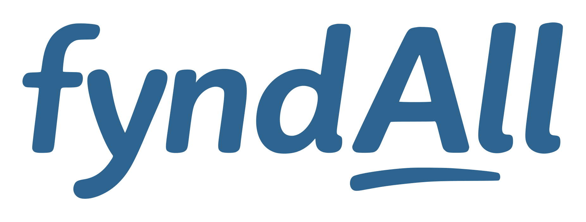

Retrouvez vos documents en quelques secondes.
fyndAll est une application mobile de gestion documentaire personnelle. Elle permet d’ajouter, scanner, analyser et retrouver facilement ses documents grâce à la recherche et à l’analyse documentaire.
Ajoutez vos documents
Importez ou scannez vos documents directement depuis votre smartphone.
Analyse documentaire
Le contenu est analysé pour faciliter le classement et la recherche.
Recherche rapide
Retrouvez plus facilement une facture, un contrat, un justificatif ou un document important.
Version bêta
fyndAll est actuellement en phase de test privée via TestFlight. Les testeurs peuvent utiliser l’application avec un mode invité, sans compte payant.
fyndAll est actuellement en phase de test privée via TestFlight. Les testeurs peuvent utiliser l’application avec un mode invité, sans compte payant.